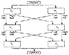
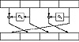

| Previous | Table of Contents | Next |
The problem with two-key triple encryption is that it only doubles the size of the keyspace, but it requires three encryptions per block of plaintext. Wouldn’t it be nice to find some clever way of combining two encryptions that would double the size of the keyspace?
Double OFB/Counter
This method uses a block algorithm to generate two keystreams, which are then used to encrypt the plaintext.

Figure 15.3 Doubling the block length.
Si and Ti are internal variables, and I1 and I2 are counters. Two copies of the block algorithm run in a kind of hybrid OFB/counter mode, and the plaintext, Si, and Ti are XORed together. The two keys, K1 and K2, are independent. I know of no cryptanalysis of this variant.
ECB + OFB
This method was designed for encrypting multiple messages of a fixed length, for example, disk blocks [186,188]. Use two keys: K1 and K2. First, use the algorithm and K1 to generate a mask of the required block length. This mask will be used repeatedly to encrypt messages with the same keys. Then, XOR the plaintext message with the mask. Finally, encrypt the XORed plaintext with the algorithm and K2 in ECB mode.
This mode has not been analyzed outside the paper in which it was proposed. Clearly it is at least as strong as a single ECB encryption and may be as strong as two passes with the algorithm. Possibly, a cryptanalyst could search for the two keys independently, if several known plaintext files are encrypted with the same key.
To thwart analysis of identical blocks in the same positions of different messages, you can add an IV. Unlike an IV in any other mode, here the IV is XORed with every block of the message before ECB encryption.
Matt Blaze designed this mode for his UNIX Cryptographic File System (CFS). It is a nice mode because the latency is only one encryption in ECB mode; the mask can be generated once and stored. In CFS, DES is the block algorithm.
xDESi
In [1644,1645], DES is used as a building block for a series of block algorithms with both larger key sizes and larger block sizes. These constructions do not depend on DES in any way and can be used with any block algorithm.
The first, xDES1, is simply a Luby-Rackoff construction with the block cipher as the underlying function (see Section 14.11). The block size is twice the size of the underlying block cipher and the key size is three times the size of the underlying block cipher. In each of 3 rounds, encrypt the right half with the block algorithm and one of the keys, XOR the result with the left half, and swap the two halves.
This is faster than conventional triple encryption, since three encryptions encrypt a block twice as large as the underlying algorithm. But there is also a simple meet-in-the-middle attack that finds the key with a table the size of 2k, where k is the key size of the underlying algorithm. Encrypt the right half of a plaintext block with all possible values of K1, XOR the left half of the plaintext, and store these values in a table. Then, encrypt the right half of the ciphertext with all possible values of K3 and look for a match in the table. If you find one, the key pair K1 and K3 are possible candidates for the right key. Repeat the attack a few times, and only one candidate will remain. This shows that xDES1 is not an ideal solution. Even worse, there is a chosen plaintext attack that proves xDES1 is not much stronger than the underlying block cipher [858].
xDES2 extends this idea to a 5-round algorithm with a block size 4 times that of the underlying block cipher and a key size 10 times that of the underlying block cipher. Figure 15.4 is one round of xDES2; each of the four sub-blocks are the size of the underlying block ciphers and all 10 keys are independent.
This scheme is also faster than triple encryption: Ten encryptions are used to encrypt a block four times the size of the underlying block cipher. However, it is vulnerable to differential cryptanalysis [858] and should not be used. The scheme is even vulnerable if DES with independent round keys is used.

Figure 15.4 One round of xDES2.
For i ≥ 3, xDESi is probably too big to be useful as a block algorithm. For example, the block size for xDES3 is 6 times that of the underlying cipher, the key size is 21 times, and 21 encryptions are required to encrypt a block 6 times that of the underlying block cipher. Triple encryption is faster.
Quintuple Encryption
If triple encryption isn’t secure enough—perhaps you need to encrypt triple-encryption keys using an even stronger algorithm—then higher multiples might be in order. Quintuple encryption is very strong against meet-in-the-middle attacks. (Similar arguments to the ones used with double encryption can show that quadruple encryption provides minimal security improvements over triple encryption.)
This construction is backwards compatible with triple encryption if K2 = K3, and is backwards compatible with single encryption if K1 = K2 = K3. Of course, it would be even stronger if all five keys were independent.
| Previous | Table of Contents | Next |
){kind=link}
){kind=link}
){kind=link}
){kind=link}